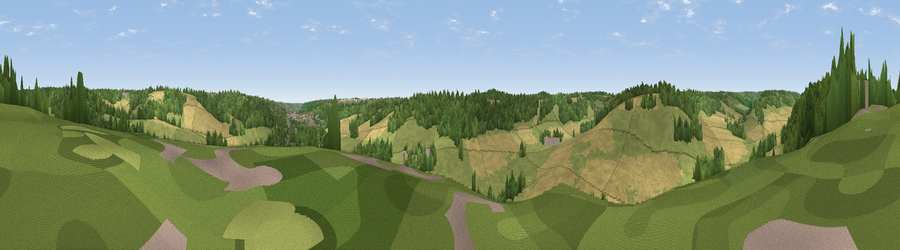

Viewpoint near West Wycombe
#39031 in England · top 62% of its area beats it · near West WycombeWhere it is
The exact computed spot (SU 82725 94975). Click the marker for map links.
The view, rendered

A 360° render of this exact spot computed from the terrain model, tree cover and land cover — summer colours, afternoon light, calibrated against photographs of famous viewpoints. Real trees, hedges and buildings will differ in detail.
The panorama
Grey silhouette: terrain skyline in each direction (720 bearings, Earth curvature and refraction included). Dashed green: skyline with trees (+15 m) and buildings (+8 m) as obstacles. Blue strip: how far the ground is visible on each bearing.
Where the view opens
Wedge length = distance to the farthest visible ground on that bearing (vegetation-aware). Rings at 10, 25 and 50 km.
What fills the view
46% grassland · 28% woodland · 22% cropland · 3% built-up ·
Angular shares of the visible panorama (visual magnitude), not map area. Landscape diversity 0.52 (0–1 Shannon).
Key numbers
More beautiful places nearby
The staircase of upgrades: each row has a higher view potential than everything closer. Driving times are estimates from straight-line distance, calibrated against real road routing — check an actual route before setting out.
| Place | Direction | Drive | Score |
|---|---|---|---|
| Viewpoint near Downley | ENE · 2 km | ~5 min | 49.2 |
| Viewpoint near Chinnor | NW · 8 km | ~16 min | 67.9 |
| Viewpoint near Chinnor | NW · 8 km | ~16 min | 72.0 |
| Viewpoint near Chinnor | NW · 8 km | ~17 min | 74.5 |
| Coombe Hill Monument | NNE · 12 km | ~22 min | 75.5 |
| Beacon Hill | SW · 53 km | ~74 min | 76.7 |
| Martinsell viewpoint | WSW · 72 km | ~95 min | 77.3 |
| Viewpoint near Buriton | S · 75 km | ~99 min | 80.0 |
51.64750, -0.80577 · source: screening · position refined by local search. Computed location — check access rights before visiting.